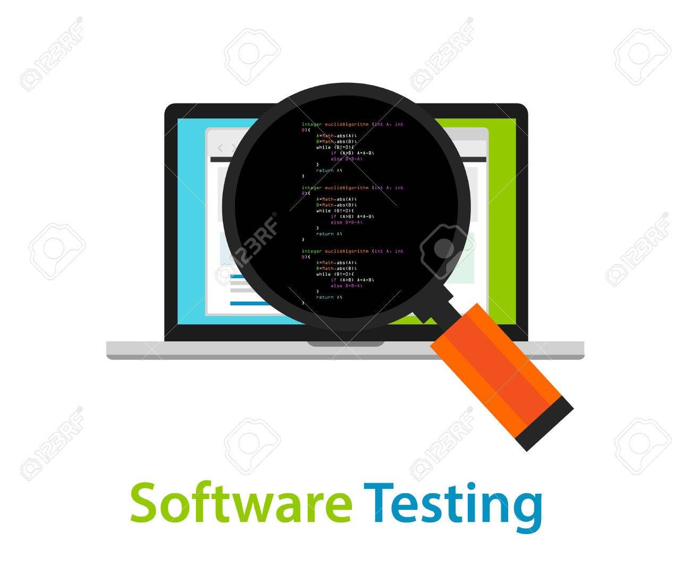
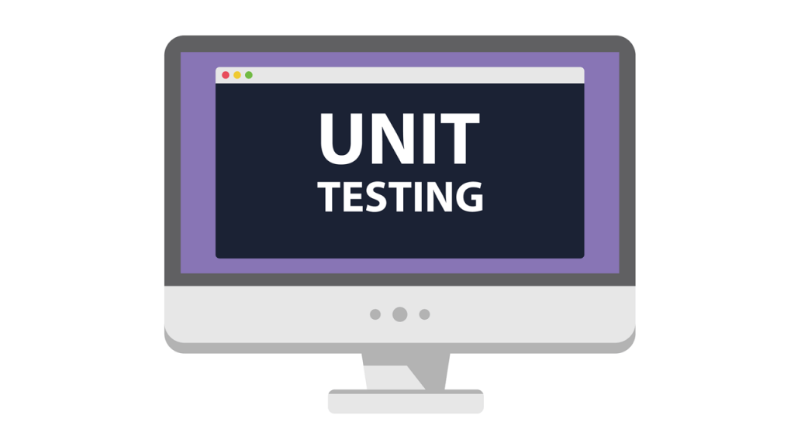
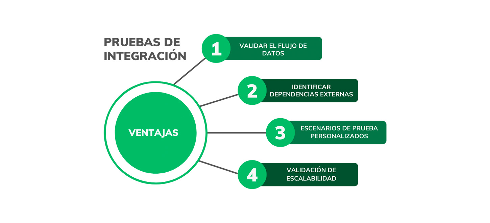
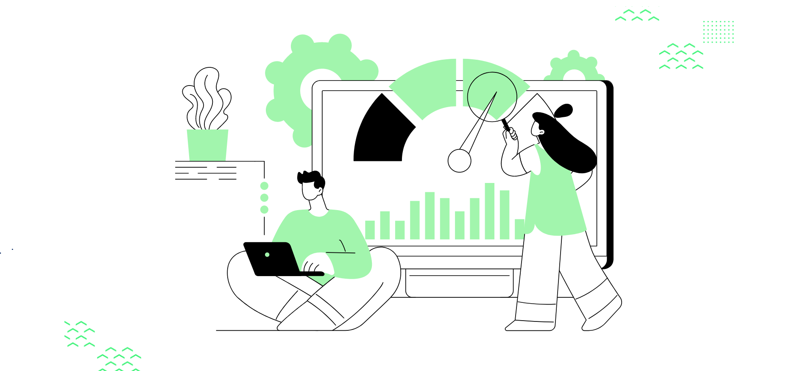

Pruebas -- Pruebas Continuas
Las pruebas en DevOps son un proceso continuo y automatizado. A lo largo del ciclo de vida de desarrollo, las pruebas son ejecutadas en cada etapa para asegurarse de que el software funcione correctamente y que no haya regresiones o errores.
Automatización de pruebas: En lugar de depender de pruebas manuales al final del ciclo, DevOps promueve las pruebas automáticas en cada fase. Esto incluye pruebas unitarias, de integración y de extremo a extremo. Al automatizar las pruebas, el ciclo de retroalimentación se acelera, lo que significa que los desarrolladores pueden corregir errores casi de inmediato.
Tipos de pruebas:
Pruebas Unitarias
Verifican si las funciones individuales o los métodos de código funcionan correctamente.
Pruebas de Integración
Aseguran que diferentes módulos del software interactúan correctamente entre sí.
Pruebas de Aceptación del Usuario (UAT)
Garantizan que el software cumpla con las expectativas del cliente.
Pruebas de Seguridad y Carga
Validan si el software es seguro y escalable bajo diferentes condiciones.
Pruebas en entornos de desarrollo y producción: Las pruebas en DevOps se realizan en entornos tanto de desarrollo como de producción. Esto asegura que el software no solo funcione bien en entornos controlados, sino también en condiciones reales.